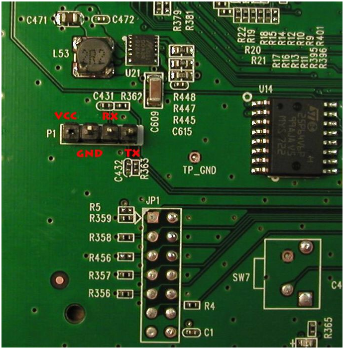

Инструкция по восстановлению TP-Link TL-WR1043ND v.1 через COM-порт
Потребуется:
- Убитый роутер
- USB to TTL COM (у меня на основе PL2303HX - пришлось вручную ставить драйвер 2008 года, иначе windows 8.1 отказывался его воспринимать)
- Витая пара
- Паяльник
- Терминальная программа
- TFTP сервер - например, WinAgents TFTP Server
- прошивка которой будем восстанавливать (официальная, dd-wrt или openwrt - на выбор)
Собственно сам процесс:
- Разбираем роутер, распаиваем serial интерфейс:

- Подключаем выходы USB to TTL COM к распаенному интерфейсу (Gnd к Gnd, Rx к Tx, Tx к Rx), после чего подключаем его к ноутбуку.
- Витой парой соединяем сетевую ноутбука и LAN1 роутера, в настройках соединения компьютера принудительно выставляем ip - 192.168.0.5, маску подсети 255.255.255.0
- Запускаем TFTP сервер и закидывает на него файл прошивки (code.bin - переименовал чтобы удобнее потом в терминале было вбивать), которой будем восстанавливаться.
- Настраиваем putty
- Conection type -Serial
- Serial line - номер COM порта у меня был COM3
- Speed - 115200
- Data bits - 8
- Stop bits - 1
- Flow control - none
- включаем роутер, после чего запускаем соединение в putty
- Для начала ввода команд Вам необходимо успеть ввести команду tpl и нажать enter за 1 секунду в интервале после надписи Autobooting in 1 seconds. Если успели, то на новой строке высветится db12x> и терминал будет ждать ввода команд.
- Вводим следующие команды
tftpboot 0x81000000 code.bin
erase 0xbf020000 +7c0000
cp.b 0x81000000 0xbf020000 0x7c0000
bootm 0xbf020000
- если все сделано правильно роутер должен нормально загрузится
Для версии v2, команды на шаге 8 будут отличаться:
tftp 0x80060000 openwrt-ar71xx-generic-tl-wr1043nd-v2-squashfs-factory.bin
erase 0x9f020000 +0x7c0000
cp.b 0x80060000 0x9f020000 0x7c0000
boot.m 0x9f020000
Тут надо разобраться: в первом варианте используется tftpboot а во втором - tftp. То ли так и нужно, то ли ошибка в командах.